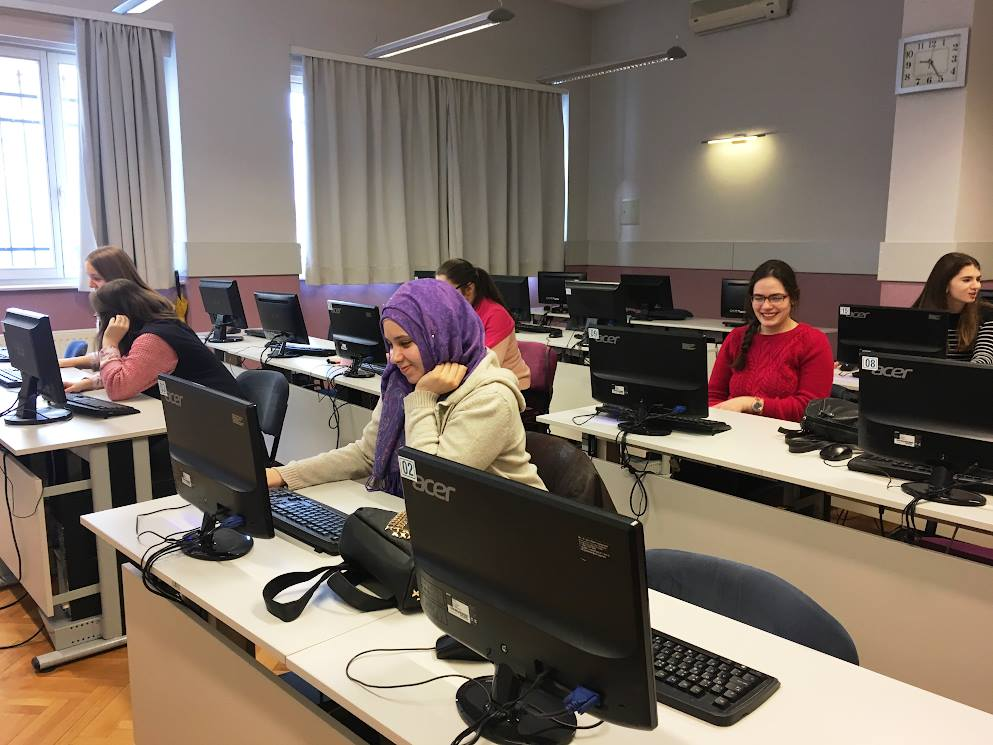
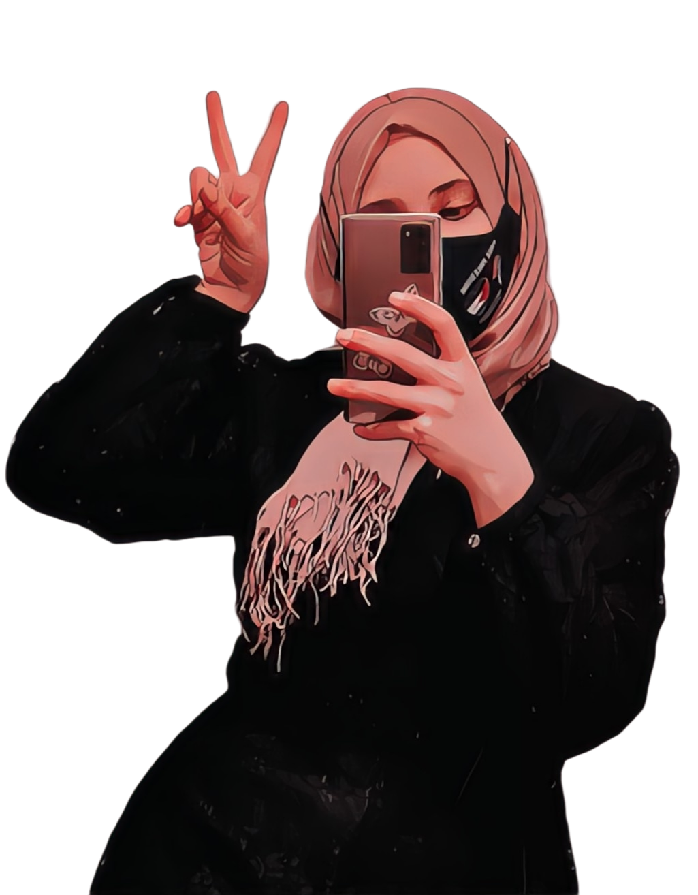

.
About Me
Hard-working, curious and responsible Senior Electrical and Electronics Engineering student at IUS, with a GPA of 3.62. Interest in how today's modern electronics work and ambition to be a complex problem solver led me to enroll into the particular field of engineering with focus on automation applications. I am a young and aspiring person, searching for an accepting environment to apply and to improve my theoretical and practical skills in the E&E engineering field, as well as in Computer Science.

Personal Information
- E-mail: munaabujaber@outlook.com
- Phone: +387 60 31 66 032
- Date of Birth: 11/11/1999
- Gender: Female
- Nationality: Bosnian-Herzegovinian
Languages
- Bosnian: Native
- English: C2
- Arabic: A2/B1
- Turkish: A1

.
ACADEMIC BACGROUND, ACHIEVEMENTS AND PROJECTS
INTERNATIONAL UNIVERSITY OF SARAJEVO
Senior, Class of 2022
- Seminar paper on "Technology and the Transformation of Work", 2018
- Developed a business plan for a pet-sitting company "SAME L.L.C."
- Published an IEEE paper on a project"Slotted Heart-shaped 4.77dB Microstrip Coupler", 2020
- Object-oriented programming project"Snake game", 2020
- Embedded Systems project"Mini Gaming Room" consisting of an LCD mini-game and a LED graphical audio/frequency equalizer, 2020
- Machine Learning project using Neural Network and k-Nearest Neighbors methods on "Effects of Life Factors on Studying", 2020
FIRST BOSNIAK HIGH SCHOOL
Graduated with honors, Class of 2018
- Class President from 2014 to 2015
- Numerous Math and Physics Regional competitions throughout all 4 years of high school, won 6th place on Regional and 21st place on Federal competition in Physics in 2017
- Seminar paper on "Graphs of Trigonometric Functions", 2017
- Graduation thesis on "Mechanics of the Human Locomotor System", 2018
TECHNICAL SKILLS
PROGRAMMING
- C/C++ (with Embedded System application)
- R language basics
- MATLAB
- VHDL basics
SOFTWARE
- Working in Sonnet Software
- Modeling in AutoCAD
- Electronic circuits modeling in Simulink, Multisim and LTspice
- ModelSIM basics
- Working in Microsoft Office
Background Knowledge in Automation Applications
- System Modeling
- Control System Design
- Embedded Systems
- Machine Learning
- Power Electronics
- E-mobility
SOFT SKILLS
I am an organized and detail-oriented person, who easily adapts to working either alone or in a team. I like to do my part in a professional and ethic way, giving in my best and being patient until the results of my work are on an excellent level. Creativity and innovation are my favorite tools to use in problem-solving and I try to utilize them in every aspect of my life and career. I work excellent under pressure and I like to stand out in everything I do.
.
Electrical and Electronics Engineering & Computer Science
Currently, I'm studying E&E Engineering at IUS, and taking a minor in Computer Science. I love to code and to study and solve complex problems in electronics!
After getting my Bachelor's degree in EE, I would like to study Masters in either Computer Engineering, Advanced Automation and Robotic Systems, or Automotive Advanced Driver Assistance Systems.
Click here to check out my CV in case You would like to work with me.
Arts, Crafts and Photography
I am a creative person. I love to design and create new things and pieces. I like to draw mandalas, nature and other inanimate things, real or imaginary. I like photography and finding good angles to picture things. I like modeling and inventing new accessories and crafts. It is something that I do with my whole heart and I love to implement creativity in all aspects of my life. Here is one of my pieces:
Making things pleasant for the eye is something that is always desirable next to functionality of it, that is why art is so important in our lives. It is a way for us to live comfortably and enjoy the things around us. Art is not just drawing, sculpting and painting, but all the designing in every aspect in life, seen or not seen.
In case You would like to see more of what I do, visit my Instagram.
.


© 2021 Muna Abu Jaber